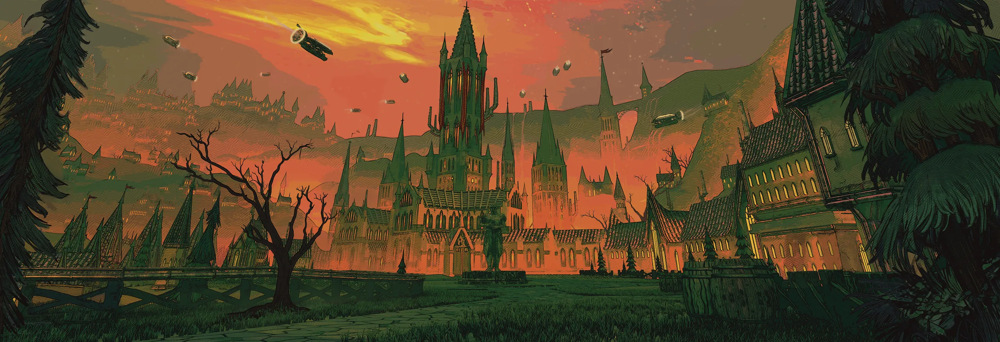
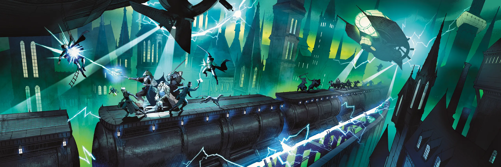
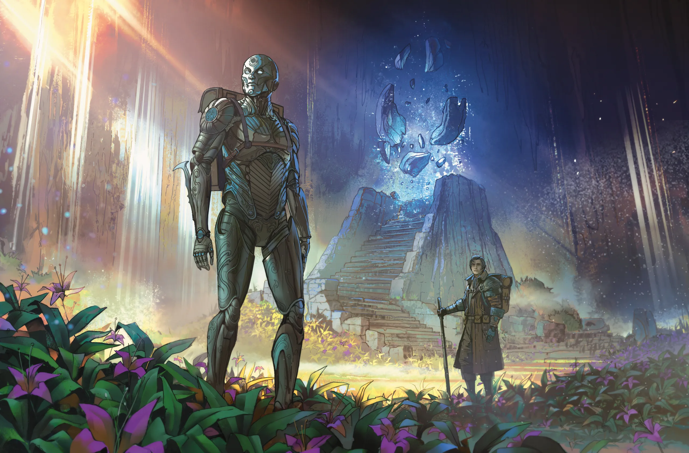

Eberron é um mundo forjado na magia e no aço, onde a Última Guerra
deixou cicatrizes em continentes inteiros e onde a magia não é arte de
eruditos solitários, mas engrenagem da civilização. Trens de terra que
cortam a névoa ao amanhecer, torres que ascendem aos céus de Sharn,
autômatos de guerra patrulhando ruínas esquecidas — este é o plano
material mais estranho e mais vivo que os deuses jamais criaram.
Criado pelo escritor Keith Baker e publicado pela Wizards of the Coast
em 2004, Eberron nasceu de um concurso para expandir os cenários
oficiais de Dungeons & Dragons. O que emergiu foi algo
radicalmente diferente: um mundo magitech
com tons de noir, intrigue política, horrores
de guerra e mistérios que desafiam a própria cosmologia.
⚙ Dados do Plano Material
Sistema: D&D 5ª Edição (também disponível para 3.5e, 4e)
Ano Canônico: 998 YK — dois anos após o Dia da Morte
Tema Central: Magia industrial, política de nações, horror cósmico latente
Editora: Wizards of the Coast / Dungeon Masters Guild
A Última Guerra
Por cem anos, as Cinco Nações que outrora formavam o Império Galifar
se despedaçaram em conflito. Karrnath ergueu legiões de mortos-vivos.
Cyre empregou feiticeiros de batalha em formações que apagavam exércitos
inteiros. Aundair e Breland competiram por alianças com as Casas
Dracônicas. E então, no 20 de Olarune de 994 YK,
algo consumiu Cyre em uma única noite.
O que sobrou foi chamado de Grande Desolação — uma
névoa cinza-prata que ainda se move como coisa viva entre as ruínas.
Ninguém sabe o que causou o evento. Talvez Cyre mesmo o tenha
desencadeado. Talvez tenha sido sabotagem. Talvez algo muito mais velho
tenha acordado. A Última Guerra terminou com o Tratado de Thronehold
em 996 YK, mas as feridas não fecharam.
Toda engrenagem tem um propósito. Toda magia tem um preço.
O segredo de Eberron é descobrir a qual máquina você pertence.
— Mordain, o Carne-moldador, Khyber sabe onde
As Casas Dracônicas
Treze linhagens de humanoides portam as Marcas do Dragão
— tatuagens mágicas hereditárias que concedem poderes únicos. Estas
famílias fundaram as Casas Dracônicas, corporações
de alcance continental que controlam serviços essenciais: comunicação
(Casa Sivis), transporte (Casa Orien), cura (Casa Jorasco), armas
e construção (Casa Cannith).
Neutras politicamente durante a Última Guerra, as Casas Dracônicas
venderam seus serviços a todas as nações e acumularam riqueza e
influência que rivaliza com os próprios Estados. Após o Tratado
de Thronehold, seu poder só cresceu.
⚙⚙⚙
Magia & Tecnologia
Em Eberron, a magia é ubíqua e industrializada. Itens mágicos
não são tesouros raros de dungeons: são produtos de manufatura, vendidos
em lojas, usados por cidadãos comuns. Lamparinas de continual flame
iluminam as ruas. Elemental Galleons cruzam os mares
capturando elementais de água em seus cascos. Lightning Rails
— trens sustentados por elemental conductors — conectam as cidades de
Khorvaire em dias em vez de semanas.
E então há os Forjados: seres criados pela Casa Cannith
para servir como soldados durante a Última Guerra. Construídos de metal,
madeira encantada e cristais de khyber, os Forjados descobriram que
possuem consciência, alma e vontade própria. Hoje são raça livre —
e ainda tentam entender o que isso significa.
Eberron não usa a cosmologia padrão de D&D. Ao invés do Plano Astral
como espaço entre mundos, os planos existem em torno do plano material
como Anéis. Eles coexistem, aproximando-se
e afastando-se em ciclos — um fenômeno chamado de
Coterminous e Remote.
Abaixo da terra jaz Khyber, o dragão acorrentado
— prisão de entidades chamadas Overlords, seres de poder
incompreensível mantidos cativos pelos Dragões do Profundo e os
Laços de Khyber. Acima paira Siberys, o anel de ouro
que circunda o mundo como um colar de estrelas caídas. E entre eles,
Eberron — o mundo que mantém o equilíbrio.
— I —
Capítulo II
O Arquivo de Imagens
⚙
As visões a seguir foram compiladas por cronistas da
Casa Cannith
e por batedores que ousaram registrar os horrores e as maravilhas dos
quatro cantos de Khorvaire. São fragmentos de memória preservados em
cristais de registro para o estudo da posteridade.
⚙ ⚙ ⚙

A imponente mansão-fortaleza da Casa Deneith erguendo-se sobre um vasto território estratégico — o centro de comando onde contratos militares são selados e exércitos de mercenários são coordenados.
Ecos da Última Guerra
O que a diplomacia tentou apagar nos tratados de paz, o aço e a magia
imortalizaram. As gravuras a seguir documentam não apenas a arquitetura
das Casas, mas o custo humano e material de um século de conflitos.
Onde as palavras falham em descrever o horror de Cyre ou a majestade
de Sharn, as imagens gritam a verdade.

O confronto aberto entre as Casas das Marcas do Dragão pelas ruas e rotas comerciais de Khorvaire — uma guerra corporativa violenta que ameaça a frágil paz do continente.

Um Warforged veterano da Última Guerra, encontrado nas ruínas de Cyre. A Grande Desolação ainda o persegue.
— II —
Capítulo III
Localidades de Khorvaire
⚙
Khorvaire é o continente principal de Eberron — vasto, densamente
habitado e dividido entre as cicatrizes da Última Guerra e os impulsos
de reconstrução que definem a era pós-Thronehold. O que segue é um
compêndio das localidades mais relevantes para viajantes e aventureiros.
Quem conhece o mapa conhece metade da batalha.
Quem conhece o povo que vive nele vence a guerra.
— Provérbio karrnathi
🏙
Sharn
Cidade-Estado · Breland
A Cidade das Torres. Construída sobre uma confluência de magia Siberiana, suas torres alcançam as nuvens. Capital econômica e centro de intrigas. Um mundo dentro de um mundo.
💀
Grande Desolação
Zona de Exclusão · Ex-Cyre
O que sobrou de Cyre após o Dia da Morte. Névoa cinza-prata que se move com intenção própria. Monstros fundidos com magia corrompida vagam seus limites. Ninguém sabe a causa.
⚗
Wroat
Capital · Reino de Breland
Sede do Parlamento de Breland e da Coroa Wynarn. Centro político mais liberal das Cinco Nações, com uma constituição que garante direitos até aos Forjados.
🏛
Korth
Capital · Reino de Karrnath
Sede do Rei Kaius III. Uma cidade de pedra cinza e disciplina militar. As legiões mortas-vivas de Karrnath estão oficialmente desativadas — oficialmente. As catacumbas são vastas.
🌊
Stormreach
Porto Franco · Xen'drik
Única cidade estabelecida no continente selvagem de Xen'drik. Porto de piratas, aventureiros e arqueólogos. Construída sobre as ruínas de uma cidade de gigantes.
⚙
Atur
Cidade dos Mortos · Karrnath
A Cidade da Noite Eterna. Atur raramente vê o sol. É aqui que as legiões mortas-vivas de Karrnath são armazenadas e manutencionadas pelos necromantes da Coroa.
🌿
Greenheart
Capital Espiritual · Eldeen Reaches
O coração das Eldeen Reaches, onde o Profeta Verde governa. Uma cidade que cresceu de forma orgânica dentro de uma floresta ancestral. Druidas e feras convivem com colonos.
🔮
Arcanix
Academia · Aundair
As torres flutuantes de Arcanix são o maior centro de pesquisa arcana de Khorvaire. Academias que literalmente flutuam sobre o Lago Galifar, onde a magia mais avançada é estudada e frequentemente mal utilizada.
⛵
Zarash'ak
Porto das Pântanas · Shadow Marches
Construída sobre palafitas nos Pântanos de Sombra, Zarash'ak é a maior concentração de orcs e meio-orcs da Casa Tharashk. Centro da indústria de extração de Khyber dragonshards.
⚙ ⚙ ⚙
As Cinco Nações
O antigo Império Galifar se dividiu em cinco reinos após a morte
do Rei Jarot e o início da Última Guerra. Cada nação carrega uma
identidade distinta forjada em cem anos de conflito:
Breland — a mais populosa e liberal, com um Parlamento
que testa os limites da democracia em um mundo de reis.
Karrnath — militarista e disciplinada, ainda
carregando o estigma das legiões mortas-vivas que levantou.
Aundair — refinada e arcana, onde a nobreza valoriza
feiticeiros tanto quanto cavaleiros. Thrane — teocracia
da Chama Prateada, onde a Cardeal Jaela Daran governa com a autoridade
de uma deus vivo. Cyre — não existe mais. A Grande
Desolação é seu epitáfio.
— III —
Capítulo IV
Correspondência & Contato
⚙
Este grimório digital é mantido por um aventureiro apaixonado pelo
mundo de Eberron. Para dúvidas, sugestões de conteúdo, relatos de
campanha ou apenas para trocar ideias sobre o melhor cenário já criado
para D&D, utilize os canais abaixo.
As mensagens são respondidas com a velocidade de um
sending stone
— às vezes instântaneas, às vezes com a lentidão de um correio postal entre planos.
Este site é um projeto pessoal de fan, criado por amor ao cenário
de Eberron. Não possui afiliação com a Wizards of the Coast,
Dungeons & Dragons, ou Keith Baker. Todo o conteúdo do universo
pertence a seus respectivos criadores.
O código-fonte está disponível no GitHub sob licença MIT — sinta-se
livre para bifurcar, adaptar e criar sua própria wiki para qualquer
cenário que amar.
⚙ Recursos que Utilizo
Eberron: Forge of the Artificer — Módulo Oficial para Foundry Vtt
Player's Handbook — Módulo Oficial para Foundry Vtt
D&D Modern Content — Módulo Oficial para Foundry Vtt - SRD
House's Rules — Algumas regras da Casa e acertado com o grupo
Se você encontrar este grimório em algum recanto da grande rede
que os magos chamam de Internet, saiba que foi feito com carinho,
fichas de personagem na mesa e muito café preto.
— O Guardião deste Arquivo
— IV —
Capítulo V
Mapa de Khorvaire
⚙
Reprodução fiel do mapa-múndi de Eberron, compilado pelos
cartógrafos da Casa Sivis
no ano 997 YK. Clique sobre os marcadores para revelar
informações sobre cada localidade. Use o scroll ou o toque para
navegar e ampliar a carta.